상품(Product)·고객(Customer)·주문상품(OrderItem)을 관리하는 온라인 쇼핑몰 REST API를 Spring Boot, JPA/H2, Gradle로 구현했다. Controller–Service–Repository 계층형 구조를 따랐고, 스켈레톤 코드 없이 처음부터 작성했다. JWT와 Docker는 과제 안내에 따라 적용하지 않았다.
@Transactional로 원자적 처리| Method | URI | 설명 |
|---|---|---|
| GET | /api/products | 상품 목록 (검색/페이징) |
| GET | /api/products/{id} | 상품 상세 |
| POST | /api/products | 상품 등록 (관리자) |
| PUT | /api/products | 상품 수정 (관리자) |
| DELETE | /api/products | 상품 삭제 (관리자) |
| GET | /api/customers | 고객 목록 |
| GET | /api/customers/{customerId} | 고객 상세 + 주문 목록 |
| GET | /api/customers/{customerId}/points | 포인트 변동 이력 |
| POST | /api/customers | 회원가입 |
| POST | /api/customers/login | 로그인 |
| POST | /api/customers/order | 상품 주문 (로그인 필요) |
| POST | /api/customers/cancel | 주문 취소 (로그인 필요) |
1. 재고 관리
상품에 재고(productStock)를 두어 주문 시 차감, 취소 시 복원하고 재고가 부족하면
주문을 거부한다.
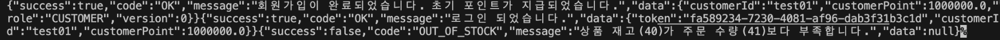
재고 40개짜리 상품을 41개 주문 → OUT_OF_STOCK
2. 동시성 제어 (낙관적 락 + 자동 재시도)
재고·포인트에 JPA @Version을 적용해, 여러 요청이 동시에 같은 상품을 주문해도 재고보다
많이 팔리지 않도록 했다. 충돌이 나면 자동으로 재시도한다.
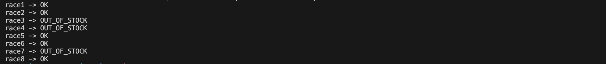
재고 5개짜리 상품에 8명이 동시 주문 → 5건만 성공(OK), 3건은 OUT_OF_STOCK
3. 관리자/고객 역할 분리
고객에 역할(고객/관리자)을 두어 상품 등록·수정·삭제는 관리자만 할 수 있게 제한했다.
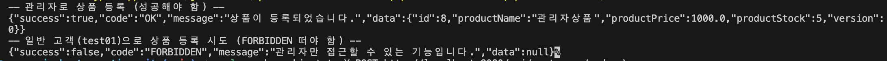
관리자 계정은 상품 등록 성공, 일반 고객 계정은 FORBIDDEN(403)
4. 포인트 변동 이력
주문/취소/가입 시점의 포인트 증감을 이력으로 남겨 조회할 수 있게 했다.
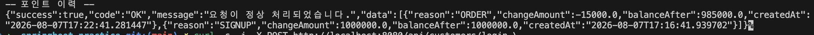
GET /api/customers/{customerId}/points 응답
5. 세션 기반 로그인 (JWT 미사용)
JWT 대신 서버가 발급한 세션 토큰을 쿠키로 내려주는 방식으로 로그인 인증을 구현했다.
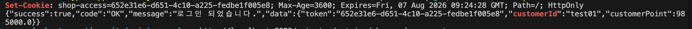
로그인 응답 헤더의 Set-Cookie: shop-access=... (HttpOnly)
6. 상품 검색
상품 이름으로 검색할 수 있게 했다.
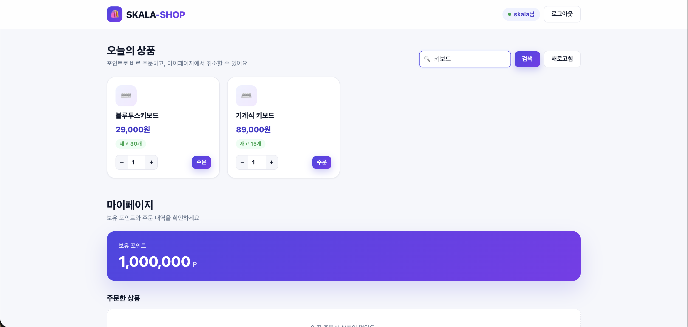
"키보드" 검색 결과
7. AOP 로깅 & Actuator 커스텀 지표
AOP로 API 호출 로그를 남기고, Actuator에 주문 건수·매출 등 커스텀 지표를 추가했다.
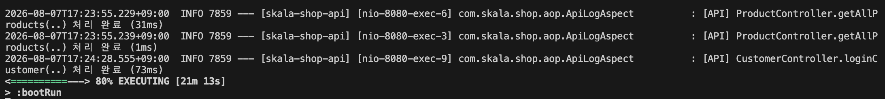
서버 콘솔에 찍힌 API 처리 로그 (ApiLogAspect)
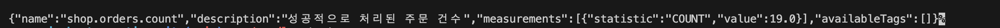
GET /actuator/metrics/shop.orders.count 응답
8. Swagger UI
springdoc-openapi로 API 문서를 자동 생성했다.
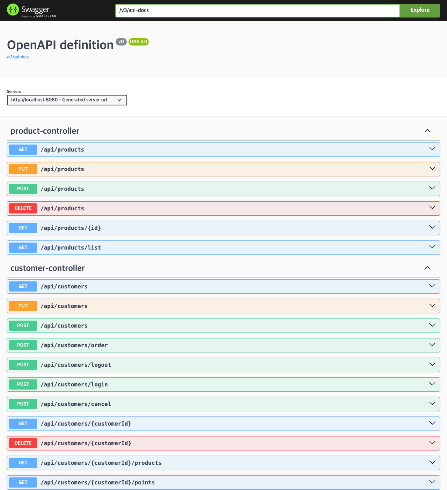
/swagger-ui/index.html
9. 프론트엔드
HTML/CSS/JS로 회원가입·로그인·상품 목록·주문·취소·마이페이지 화면을 구현했다.
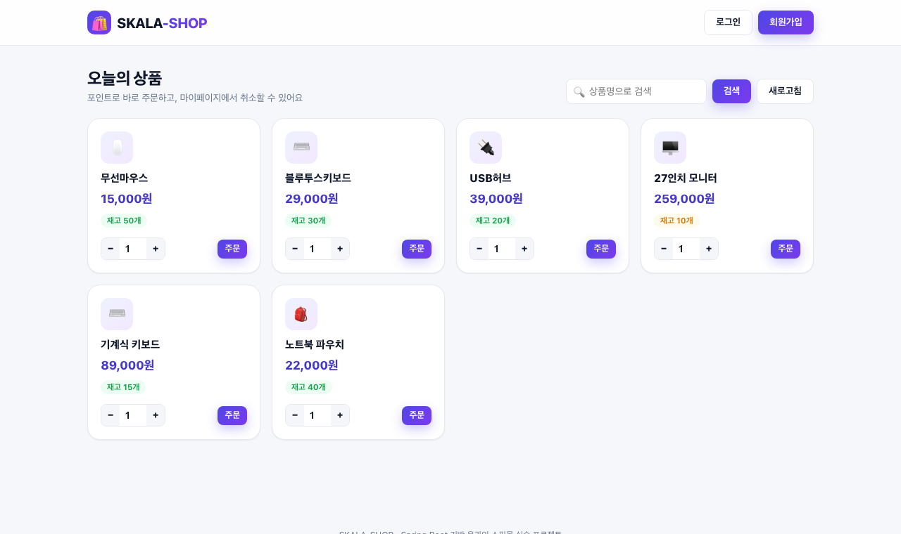
상품 목록 (비로그인)
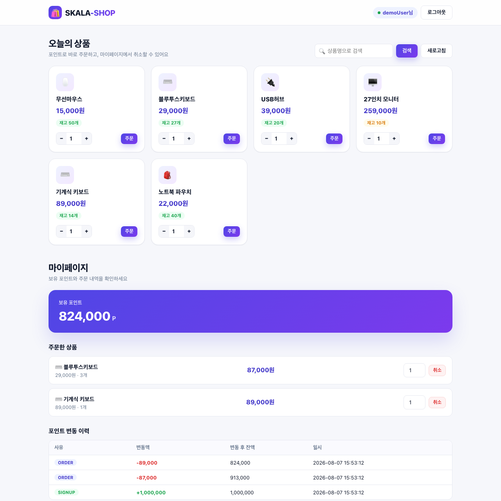
로그인 후 마이페이지
10. 자동화 테스트
회원가입~주문~취소 흐름과 동시 주문 시나리오를 JUnit 테스트로 작성했다.
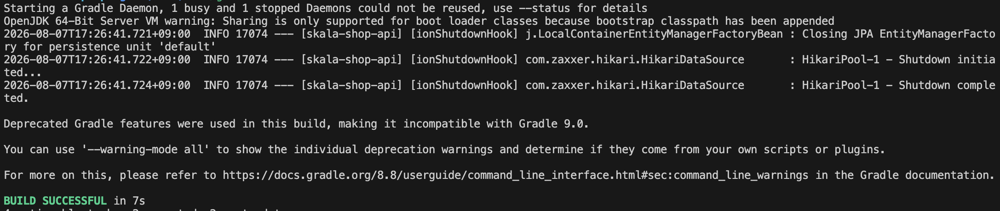
./gradlew test 실행 결과 (BUILD SUCCESSFUL)
./gradlew bootRun # http://localhost:8080/ ./gradlew test
기동 시 관리자 계정(admin / admin1234)이 자동 생성되며, 상품 등록·수정·삭제는 이 계정으로 로그인해야 한다.